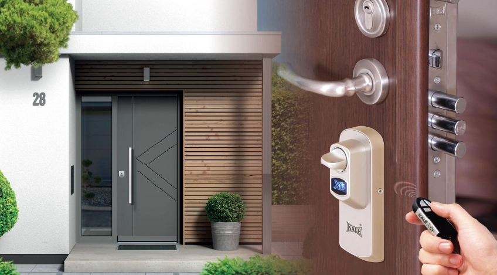

The panic of losing your keys is increasingly a thing of the past. Today you can open your door with a fingerprint, code, or phone. Smart lock systems are transforming security and everyday convenience. But are they truly secure? And which type suits you? Let's explore.
What is a smart lock system?
A smart lock is a digital electronic security system that replaces traditional mechanical locks. It opens via fingerprint, PIN, card, remote, or mobile app.
Unlike a classic key, it offers user recognition, access control, entry logs, and remote management — strengthening security while simplifying daily use.
Types of smart locks and their features
1. Fingerprint locks (biometric)
Among the most popular types. The door opens by reading your fingerprint. Each print is unique, so security is high.
Advantages:
- No key or code to remember
- Cannot be copied or stolen like a physical key
- Fast access (1–2 seconds)
- Multiple users (50–200 fingerprints)
- Easy for children and seniors
Disadvantages:
- Reading may fail with wet or dirty fingers
- Fingerprint fade in older adults
- Backup power needed during outages
2. PIN code locks
Opened by entering a code on a keypad. A simple, effective solution.
Advantages:
- Economical
- Easy to use
- Flexible code changes
- Guest codes
- Temporary codes (for cleaning or maintenance)
Disadvantages:
- Risk of forgetting the code
- Sharing codes is a security weakness
- Keypad wear may leave traces
3. Card locks (RFID/NFC)
Work with smart cards similar to credit cards. Common in hotels and offices.
Advantages:
- Fast access
- Cards can be deactivated
- Multiple cards supported
- Time-based access control
- Entry logging
Disadvantages:
- Risk of losing the card
- Must carry the card
- Copying possible on low-security cards
4. Mobile app locks
The latest systems, controlled via Bluetooth or Wi-Fi.
Advantages:
- Remote control (Wi-Fi)
- Entry and exit logs
- Instant notifications
- Temporary permissions
- Smart home integration
- Alexa and Google Home support
Disadvantages:
- Phone battery may die
- May require internet
- Cybersecurity risks
- Higher cost
5. Hybrid systems (multiple methods)
Combine fingerprint + PIN + card + app.
Advantages:
- Maximum flexibility
- Backup opening options
- Different methods for different users
- Highest security level
Security features
Encryption and data security
Modern locks use military-grade encryption (AES 128/256 bit).
Anti-theft features
- Wrong-attempt alarm: after 3–5 failed tries
- Forced-entry detection
- Duress code: silent alarm under threat
- Auto-lock: after a set period
Backup power system
- Internal battery (6–12 months)
- Low-battery warning
- USB emergency port
- Mechanical key backup (some models)
Installing smart locks on steel doors
They can be retrofitted to existing doors or supplied with new doors.
Installation options
| Installation type | Description | Suitability |
|---|---|---|
| Surface mount | Fitted over the existing lock | All doors |
| Concealed mount | Integrated into the door | New doors |
| Replacement | Remove old lock, install new | Standard sizes |
Pre-installation checks
- Door thickness compatibility (usually 40–120 mm)
- Lock pocket dimensions
- Electrical connection requirements
- Door material suitability
Pricing and cost analysis
Smart lock prices vary by features and brand:
Contact Us
Request a quote for your project
Learn about steel door models with smart lock integration and installation options.
Additional costs:
- Professional installation fee
- Door modification (if needed)
- Annual battery replacement
- Software updates (paid on some models)
What to consider when choosing
1. Purpose
- Home: fingerprint + PIN is sufficient
- Office: card + logging
- Villa: app + remote control
- Apartment building: multiple users + access control
2. Number of users
Some systems register 50 users; others support 200+.
3. Internet connection
Remote control requires Wi-Fi. Local use works with Bluetooth alone.
4. Brand and warranty
Prefer established brands. Minimum two-year warranty. Local service support matters.
5. Battery life
6–12 months is ideal with low-battery alerts.
Smart home integration
Examples
- Smart lighting: turns on when the door opens
- Security camera: starts recording on entry
- Alarm: triggers on forced opening
- Thermostat: activates when you return
- Voice assistant: "Alexa, lock the door"
Security and privacy
Cybersecurity
- Use strong passwords
- Keep firmware updated
- Enable two-factor authentication
- Use a secure Wi-Fi network
- Choose trusted brands
Data privacy
Some locks send usage data to the manufacturer. Read the privacy policy.
Maintenance and usage tips
Regular maintenance
- Clean the fingerprint sensor with a soft cloth
- Keep the keypad dry
- Monitor battery level
- Install updates
- Annual professional check
Safe usage
- Change codes regularly
- Revoke temporary access on time
- Review entry logs
- Change codes after suspicious activity
Frequently asked questions
Are smart locks secure?
Quality brands can be more secure than mechanical locks thanks to encryption, anti-theft features, and logging.
What happens during a power outage?
They run on battery. When depleted: USB charging or mechanical key.
Does the fingerprint reader always work?
Reading may fail with wet or dirty fingers. Hybrid systems are recommended.
Can the lock be hacked?
Theoretically possible, but military-grade encryption makes it difficult. Updates reduce risk.
Can it be fitted to my existing door?
Yes — most smart locks are retrofittable. Professional installation is recommended.
Conclusion: is a smart lock worth buying?
Smart locks are not just a luxury; they are a practical need for modern living. Beyond eliminating keys, they offer advanced security, ease of use, and smart home integration.
For villa owners, office managers, and technology enthusiasts, they are an excellent investment. The upfront cost may seem high, but long-term comfort and security are worth it.
At Yiğit Çelik Kapı, we integrate the latest smart lock systems into our steel doors. Fingerprint, PIN, card, and app — tailored security solutions for you.
Yiğit Çelik Kapı
Smart lock solutions
Smart locks integrated with steel doors — fingerprint, PIN, card, and app.